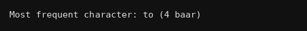

package strings;
import java.io.*;
public class Q065 {
public static void main(String[] args) throws IOException {
// pehle ek file bana lete hai
FileWriter fw = new FileWriter("words.txt");
fw.write("to be or not to be\nthat is the question\nto think is to be");
fw.close();
// file se saare words ek array me
BufferedReader br = new BufferedReader(new FileReader("words.txt"));
String line, all = "";
while((line=br.readLine())!=null)
all = all + line + " ";
br.close();
String w[] = all.trim().split(" ");
String best = "";
int max = 0;
for(int i=0;i<w.length;i++){
int c = 0;
for(int j=0;j<w.length;j++){
if(w[i].equals(w[j])) c++;
}
if(c>max){
max = c;
best = w[i];
}
}
System.out.println("Most frequent character: "+best+" ("+max+" baar)");
}
}